Trazo 로고 파일 (고도 획)
원본: svg/ · PNG: png/ · 사용법: README.md
앱 아이콘 (둥근 사각) — png/icon/
trazo-icon-1024.png
trazo-icon-512.png
trazo-icon-256.png
trazo-icon-192.png
trazo-icon-128.png
trazo-icon-64.png
trazo-icon-small-48.png
trazo-icon-small-32.png
trazo-icon-small-16.png
꽉 찬 사각 (iOS·안드로이드가 모서리를 깎는 곳) — png/icon-square/
trazo-icon-square-1024.png
trazo-icon-square-512.png
trazo-icon-square-192.png
trazo-icon-square-180.png
원형 (가민 런처 등) — png/icon-round/
trazo-icon-round-512.png
trazo-icon-round-128.png
trazo-icon-round-80.png
trazo-icon-round-70.png
trazo-icon-round-65.png
trazo-icon-round-60.png
trazo-icon-round-54.png
trazo-icon-round-40.png
마크만 (바탕 없음) — png/mark/
trazo-mark-black-512.png
trazo-mark-black-128.png
trazo-mark-on-dark-512.png
trazo-mark-on-dark-128.png
trazo-mark-on-light-512.png
trazo-mark-on-light-128.png
trazo-mark-teal-512.png
trazo-mark-teal-128.png

trazo-mark-white-512.png
trazo-mark-white-128.png
로고 + 글자 — png/lockup/
trazo-lockup-dark-192.png
trazo-lockup-dark-96.png
trazo-lockup-light-192.png
trazo-lockup-light-96.png
trazo-lockup-mark-dark-192.png
trazo-lockup-mark-dark-96.png
trazo-lockup-mark-light-192.png
trazo-lockup-mark-light-96.png